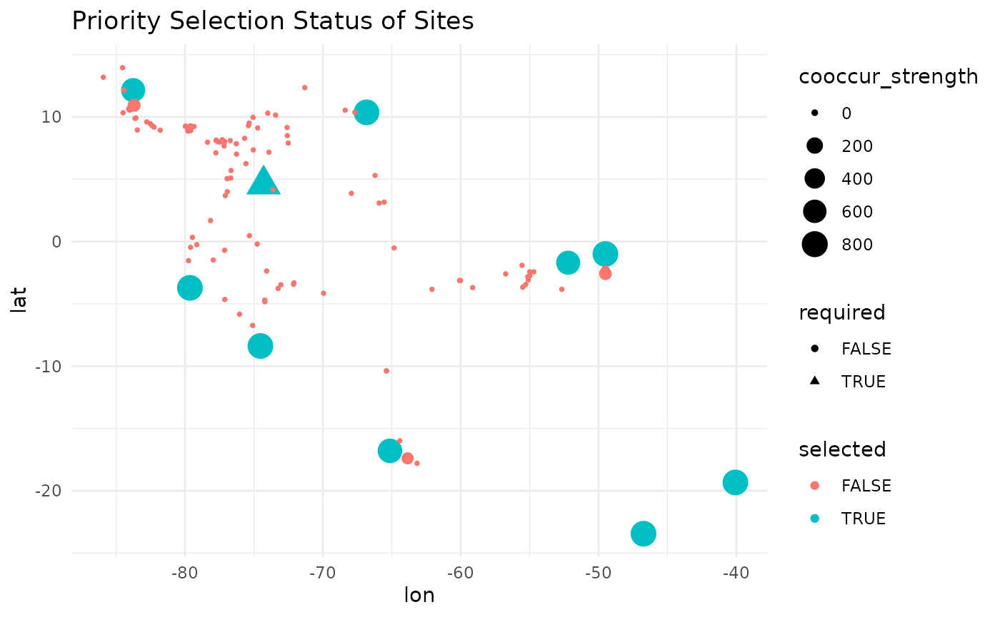

prepare data
Load the required packages.
#remotes::install_github('sagesteppe/safeHavens')
library(safeHavens)
library(ggplot2)
library(patchwork)
set.seed(99)Here we will use the Bradypus data included in the dismo
package again.
x <- read.csv(file.path(system.file(package="dismo"), 'ex', 'bradypus.csv'))
x <- x[,c('lon', 'lat')]
x <- sf::st_as_sf(x, coords = c('lon', 'lat'), crs = 4326)And we will create the same base map used in
GettingStarted.
#> Warning: attribute variables are assumed to be spatially constant throughout
#> all geometriesWhile all other functions in the package handle sf
objects directly, this function will actually just use a simple data
frame of sites, to simplfy handing data off to C++ for optimization
routines.
The input to the maximizeDispersion function is a list
with two elements: a distance matrix, and a data frame of site locations
and attributes. The data frame must contain the following columns.
n_sites <- nrow(x)
df <- data.frame(
site_id = seq_len(n_sites),
required = FALSE,
coord_uncertainty = 0,
lon = sf::st_coordinates(x)[,1],
lat = sf::st_coordinates(x)[,2]
)
head(df)
#> site_id required coord_uncertainty lon lat
#> 1 1 FALSE 0 -65.4000 -10.3833
#> 2 2 FALSE 0 -65.3833 -10.3833
#> 3 3 FALSE 0 -65.1333 -16.8000
#> 4 4 FALSE 0 -63.6667 -17.4500
#> 5 5 FALSE 0 -63.8500 -17.4000
#> 6 6 FALSE 0 -64.4167 -16.0000The second required element, the distance matrix, can be calculated
with the greatCircleDistance function in the package.
Please use this rather than st_distance from sf for
consistency, as the units differ slightly. If you want to use
sf::st_distance, make sure to convert the units to match
the scale of the greatCircleDistance function, otherwise
the results will be incorrect.
dist_mat <- sapply(1:nrow(df), function(i) {
greatCircleDistance(
df$lat[i], df$lon[i],
df$lat, df$lon
)
})The optimization routine requires at least one ‘required’ site to be specified. Here we will select the site closest to the geographic center of all sites as the required site.
Normally this can refer to existing accessions, or administrative units, or preserves which are helping to implement the germplasm collection, and are fortunate enough to already have some samples or at least guaranteed access.
dists2c <- greatCircleDistance(
median(df$lat),
median(df$lon),
df$lat,
df$lon
)
df[order(dists2c)[1],'required'] <- TRUEThis function not only bootstraps sites to simulate the true distribution distribution of the species, but it also bootstraps coordinate uncertainty for each site. Here we will randomly assign 20% of the sites to have coordinate uncertainty between 1 km and 40 km. Note that he argument is always in meters.
Run KMedoidsBasedSample based only on geographic distances
The input to the function is the distance matrix, and the site data.
test_data <- list(
distances = dist_mat,
sites = df
)
str(test_data)
#> List of 2
#> $ distances: num [1:116, 1:116] 0 1.83 714.09 807.71 797.93 ...
#> $ sites :'data.frame': 116 obs. of 5 variables:
#> ..$ site_id : int [1:116] 1 2 3 4 5 6 7 8 9 10 ...
#> ..$ required : logi [1:116] FALSE FALSE FALSE FALSE FALSE FALSE ...
#> ..$ coord_uncertainty: num [1:116] 0 0 0 0 0 ...
#> ..$ lon : num [1:116] -65.4 -65.4 -65.1 -63.7 -63.9 ...
#> ..$ lat : num [1:116] -10.4 -10.4 -16.8 -17.4 -17.4 ...
rm(x, n_sites, uncertain_sites, dists2c)The funtion KMedoidsBasedSample has several parameters
to control run parameters.
st <- system.time( {
geo_res <- KMedoidsBasedSample( ## reduce some parameters for faster run.
input_data = test_data,
n = 5,
n_bootstrap = 10,
dropout_prob = 0.1,
n_local_search_iter = 10,
n_restarts = 2
)
}
)
#> Sites: 116 | Seeds: 1 | Requested: 5 | Coord. Uncertain: 19 | BS Replicates: 10
#> | | | 0% | |======= | 10% | |============== | 20% | |===================== | 30% | |============================ | 40% | |=================================== | 50% | |========================================== | 60% | |================================================= | 70% | |======================================================== | 80% | |=============================================================== | 90% | |======================================================================| 100%The function operates relatively quick with few bootstraps and few sites, but will take a smidge of time longer with more complex scenarios. We recommened using at least 999 bootstraps for real world applications.
st
#> user system elapsed
#> 26.974 0.016 26.992
rm(st)return output structure
Various elements are returned in the output list.
str(geo_res)
#> List of 5
#> $ input_data :'data.frame': 116 obs. of 9 variables:
#> ..$ site_id : int [1:116] 47 21 5 83 100 6 106 19 95 86 ...
#> ..$ required : logi [1:116] TRUE FALSE FALSE FALSE FALSE FALSE ...
#> ..$ coord_uncertainty: num [1:116] 0 0 0 37284 13617 ...
#> ..$ lon : num [1:116] -74.3 -55.1 -63.9 -79.8 -74.1 ...
#> ..$ lat : num [1:116] 4.58 -2.83 -17.4 9.17 -2.37 ...
#> ..$ cooccur_strength : num [1:116] 40 28 24 20 20 16 16 12 12 8 ...
#> ..$ is_seed : logi [1:116] TRUE FALSE FALSE FALSE FALSE FALSE ...
#> ..$ selected : logi [1:116] TRUE TRUE FALSE TRUE FALSE TRUE ...
#> ..$ sample_rank : int [1:116] 1 2 3 4 4 5 5 6 6 7 ...
#> $ selected_sites : int [1:5] 6 21 47 83 106
#> $ stability_score: num 0.2
#> $ stability :'data.frame': 116 obs. of 3 variables:
#> ..$ site_id : int [1:116] 47 21 5 83 100 6 106 19 95 86 ...
#> ..$ cooccur_strength: num [1:116] 40 28 24 20 20 16 16 12 12 8 ...
#> ..$ is_seed : logi [1:116] TRUE FALSE FALSE FALSE FALSE FALSE ...
#> $ settings :'data.frame': 1 obs. of 4 variables:
#> ..$ n_sites : num 5
#> ..$ n_bootstrap : num 10
#> ..$ dropout_prob: num 0.1
#> ..$ n_uncertain : int 19The stability score shows how often the most frquently selected network of sites was selected from the bootstrapped runs.
head(geo_res$stability_score)
#> [1] 0.2The stability data frame shows how often each site was selected across all bootstrap runs.
head(geo_res$stability)
#> site_id cooccur_strength is_seed
#> 47 47 40 TRUE
#> 21 21 28 FALSE
#> 5 5 24 FALSE
#> 83 83 20 FALSE
#> 100 100 20 FALSE
#> 6 6 16 FALSEMany users may find the combindation of their input data with a few columns, to be all they need to carry on after the results.
head(geo_res$input_data)
#> site_id required coord_uncertainty lon lat cooccur_strength
#> 47 47 TRUE 0.00 -74.3000 4.5833 40
#> 21 21 FALSE 0.00 -55.1333 -2.8333 28
#> 5 5 FALSE 0.00 -63.8500 -17.4000 24
#> 83 83 FALSE 37283.66 -79.8167 9.1667 20
#> 100 100 FALSE 13616.63 -74.0833 -2.3667 20
#> 6 6 FALSE 0.00 -64.4167 -16.0000 16
#> is_seed selected sample_rank
#> 47 TRUE TRUE 1
#> 21 FALSE TRUE 2
#> 5 FALSE FALSE 3
#> 83 FALSE TRUE 4
#> 100 FALSE FALSE 4
#> 6 FALSE TRUE 5Run parameters are saved in the settings element.
head(geo_res$settings)
#> n_sites n_bootstrap dropout_prob n_uncertain
#> 1 5 10 0.1 19visualize the selection results
map +
geom_point(data = geo_res$input_data,
aes(
x = lon,
y = lat,
shape = required,
size = cooccur_strength,
color = selected
)
) +
# ggrepel::geom_label_repel(aes(label = site_id), size = 4) +
theme_minimal() +
labs(title = 'Priority Selection Status of Sites; Geographic Distances')
map +
geom_point(data = geo_res$input_data,
aes(
x = lon,
y = lat,
shape = required,
size = -sample_rank,
color = sample_rank
)
) +
# ggrepel::geom_label_repel(aes(label = sample_rank), size = 4) +
theme_minimal() 
run KMedoidsBasedSample with environmental distances
extract prep environmental distances
files <- list.files(
path = file.path(system.file(package="dismo"), 'ex'),
pattern = 'grd', full.names=TRUE )
predictors <- terra::rast(files) # import the independent variables
rm(files)For our environmental distances, we will use a PCA transformation of the environmental variables. We will simply scrape 100 random points from the raster layers to calculate the PCA. Then predict the PCA raster layers across the entire study area. We will take the first two layers, and calculate environmental distances based on these two layers.
pts <- terra::spatSample(predictors, 100, na.rm = TRUE)
pts <- pts[, names(pts)!='biome' ] # remove categorical variable for distance calc
pca_results <- stats::prcomp(pts, scale = TRUE)
round(pca_results$sdev^2 / sum(pca_results$sdev^2), 2) # variance explained
#> [1] 0.58 0.26 0.10 0.04 0.02 0.00 0.00 0.00
pca_raster <- terra::predict(predictors, pca_results)
terra::plot(terra::subset(pca_raster, c(1:2))) # prediction of the pca onto a new raster
rm(pts, predictors, pca_results)we keep the first two PCA layers for environmental distance calculation. More layers will increase dimenstionality, and may lead to less useful results. Note that it’s fine to use a euclidean distance calculation for these, as the values are truly in the position of the plot.
env_values <- terra::extract(pca_raster,
sf::st_coordinates(
sf::st_as_sf(
df,
coords = c('lon', 'lat'),
crs = 4326
)
)
)[,1:2]
plot(env_values, main = 'environmental distance of points from first two PCA axis')
test_data <- list(
distances = env_dist_mat,
sites = df
)
st <- system.time(
{
env_res <- KMedoidsBasedSample( ## reduce some parameters for shorter run time.
input_data = test_data,
n = 5,
n_bootstrap = 10,
dropout_prob = 0.1,
n_local_search_iter = 50,
n_restarts = 2
)
}
)
#> Sites: 116 | Seeds: 1 | Requested: 5 | Coord. Uncertain: 19 | BS Replicates: 10
#> | | | 0% | |======= | 10% | |============== | 20% | |===================== | 30% | |============================ | 40% | |=================================== | 50% | |========================================== | 60% | |================================================= | 70% | |======================================================== | 80% | |=============================================================== | 90% | |======================================================================| 100%
rm(dist_mat, env_dist_mat)
st
#> user system elapsed
#> 34.760 0.022 34.785
rm(st)
head(env_res$stability_score)
#> [1] 0.2
map +
geom_point(data = env_res$input_data,
aes(
x = lon,
y = lat,
shape = required,
size = cooccur_strength,
color = selected
)
) +
# ggrepel::geom_label_repel(aes(label = site_id), size = 4) +
theme_minimal() +
labs(title = 'Priority Selection Status of Sites; Environmental')
alternative methods for required central points
In the example above we use a point at the median geographic center of the populations.
We can also identify the population which is most near the highest density of populations. Intuitively, this would be suggested as a population with a very high genetic diversity.
dens <- with(df, MASS::kde2d(lon, lat, n = 200))
max_idx <- which(dens$z == max(dens$z), arr.ind = TRUE)[1,]
max_point <- c(dens$x[max_idx[1]], dens$y[max_idx[2]])
pops_centre <- sweep(df[c('lon', 'lat')], 2, max_point, "-")
pop_centered_id <- which.min(rowSums(abs(pops_centre^2)))
rm(dens, max_idx, max_point, pops_centre)Likewise we can identify the population which is most near the ‘center’ of the environmental variable space.
env_centered <- sweep(env_values, 2, sapply(env_values, median), "-")
env_centered_id <- which.min(rowSums(abs(env_centered^2)))
rm(env_values)Personally I would consider the ‘pop centered’ population to be the most important required site to center a design off of.
# geographic centroid was pt 47
centers <- df[ c(env_centered_id, pop_centered_id, 47), ]
centers$type <- c('Environmental', 'Population', 'Geographic')
map +
geom_point(
data = df,
aes(x = lon, y = lat)
) +
geom_point(
data = centers,
aes(x = lon, y = lat),
col = '#FF1493', size = 4
) +
ggrepel::geom_label_repel(
data = centers,
aes(label = type, x = lon, y = lat)
) +
theme_minimal() +
labs(title = 'Possbilities for centers')
rm(env_centered_id, env_centered, pop_centered_id)